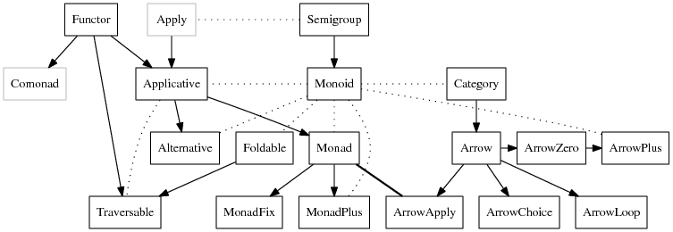

Terminology

Category Theory
Category Theory to Haskell
- Objects are types
- Morphisms are functions
- Things that take a type and return another type are type constructors
- Things that take a function and return another function are higher-order functions
- Typeclasses capture the fact that things are often defined for a ‘set’ of objects at once
Functor
A ‘container’ of some sort, along with the ability to apply a function uniformly to every element in it
Essentially a transformation between categories. Given categories and and a functor
- maps any object to (the type constructor)
- maps morphisms to (
fmap). Importantly, this means that all functors must be generic over at least one parameter (e.g.Maybeand notInteger)- applying
fmapis sometimes called ‘lifting’ as it lifts a function from the normal context into the ‘f’ world
- applying
class Functor f where
-- fmap maps morphisms
fmap :: (a -> b) -> f a -> f b
-- applies a 'constant' function to replace the values in a container
(<$) :: a -> f b -> f a
-- default implementation
(<$) = fmap . constfmap takes a function which maps a value from a to b and applies it to a Functor f. Think of f as the container, (a -> b) as the function that operates on the ‘inner’ values.
Monad
Monads are functors from a category to that same category. A container for values that can be mapped over.
Think of it like a context-specific environment. You need a function to transform things outside of it to things in it. You also need a function to manipulate stuff inside of that environment.
A monad is a functor along with two morphisms
- (
return) - (can be recovered from
bind)
class Monad m where
-- join operation (optional, only one of bind or join need to be defined)
join :: m (m a) -> m a
-- bind operation
-- takes an f :: (a -> m b) and applies it to
-- the inner value a of m
(>>=) :: m a -> (a -> m b) -> m b
-- replaces m a with m b
(>>) :: m a -> m b -> m b
-- constructs the simplest monad m using a
return :: a -> m aMonad laws
return a >>= k = k a
m >>= return = m
m >>= (\x -> k x >>= h) = (m >>= k) >>= hLeft and Right Associativity
Associativity of an operator determines how operators are grouped in the absence of parentheses.
For the following examples, we consider a fictional operator ~
- Associative: operations can be grouped arbitrarily (e.g. addition, order doesn’t matter)
- Left-associative: operations are grouped left to right
a ~ b ~ cis interpreted as(a ~ b) ~ c- Examples include
- Function application operator
- Right-associative: operations are grouped right to left
a ~ b ~ cis interpreted asa ~ (b ~ c)- Examples include
- Variable assignment (
=) - Exponentiation (
^)
- Variable assignment (
- Non-associative: operations cannot be chained
Parser Combinators
Parser combinators are a technique for implementing parsers by defining them in terms of other parsers
Notes on Chumsky
Where a and b are both parsers.
Parser Methods
just(a)accepts a single stringaa.or(b)parsea, ifafails, try parsingba.choice(b,c,d...)try parsingb,c,d, return first one that succeedsa.or_not()optionally parseaa.ignore_then(b)ignore patternathen parseba.then_ignore(b)parseathen ignoreba.then(b)parse bothaandband return a tuple of(a,b)a.padded()ignore whitespace aroundaa.repeated().at_least(n)parseaat leastntimesa.filter(fn)only acceptaiffn(a)evaluates to true
Result Methods
a.collect()turn results ofainto an iteratora.map(b)map results ofainto typeba.chain(b)concatenate results of parsersaandbinto collectiona.copy(b)duplicate parser definitiona.flatten()flatten nested collectiona.to(b)marks result ofaas typeba.labelled(b)label result of a withba.end()indicate end of parser
Haskell Syntax Quirks
$ :: (a -> b) -> a -> bis function application (adds implicit parentheses and makes it right associative instead of left associative)- Normally,
sort "abc" ++ "def"would be interpreted as(sort "abc") ++ "def" - If we use the
$operator, we can dosort $ "abc" ++ "def"which is interpreted assort ("abc" ++ "def")as intended.
- Normally,
.is function composition. Read the dot as the little dot in<>is a synonym formappend :: Monoid m => m -> m -> mor the monoidal append<$>is a synonym forfmap :: (a -> b) -> f a -> f b- Intuitively like applying a function to a container
<*>is like<$>but for wrapped functions(<*>) :: Applicative f => f (a -> b) -> f a -> f b- Intuitively like applying a function in a container to another container
- Remember that
(<$)and($>)point towards the value that will be kept void :: Functor f => f a -> f ()is implemented asvoid x = () <$ x. Read as: whatever you give me, I will return the unit value